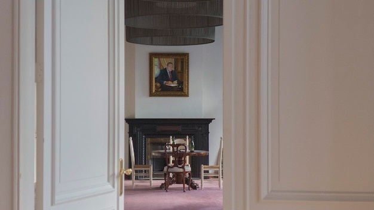

Natural light can make a home feel more open and comfortable, but bringing it into every room takes more than choosing pale paint. Window placement, furniture, finishes and privacy all affect how daylight moves through a space. The aim is to make the most of the light available while keeping each room practical and inviting.

Keep window glass as clear as possible and avoid placing large objects directly in front of it. A tall plant, bulky chair or deep shelving unit can block light before it reaches the rest of the room. Where privacy allows, choose simple window treatments that can be drawn fully back during the day.
Heavy curtains can be replaced with lighter fabrics, or paired with a discreet blind for privacy after dark. In rooms that face neighbours or a street, consider translucent treatments that soften views without making the window feel closed off. The best choice depends on the room’s exposure, how it is used and how much privacy it needs.
Light-coloured walls and ceilings tend to reflect more daylight around a room than very dark finishes. This does not mean every surface has to be white. Warm neutrals, soft greens and other muted shades can still feel bright, especially when combined with a lighter ceiling and reflective finishes.
Glossy or polished surfaces can bounce light around, but too many can create glare or make a room feel stark. Use reflective materials selectively: a glass table, a satin-finish paint or a mirror can help, while natural textures such as wood and linen keep the space balanced.
Place the largest pieces of furniture where they will not interrupt the path between a window and the darker parts of the room. Low-profile furniture near a window can preserve the view and allow more light through. In an open-plan space, avoid using tall units to divide the room if they would cast a shadow across another area.
Mirrors can also help distribute daylight. Position one where it reflects a window or a bright part of the room, rather than facing a cluttered corner. Check the reflection from different parts of the space; a mirror is most useful when it brings light into an area that would otherwise feel dim.
A room with limited or no external glazing cannot receive daylight in the same way as a room with a window. In these spaces, keep the route from brighter rooms open where possible. Glazed internal doors, glass panels or open doorways can allow borrowed light to reach hallways, landings and interior rooms, while still helping to define separate areas.
For a windowless bathroom or utility room, pale finishes and mirrors may make the space feel less enclosed, but they cannot replace natural light. Use suitable artificial lighting as a practical complement, particularly in areas where daylight is limited.
In living rooms and bedrooms, flexible window coverings make it easier to balance daylight with privacy and comfort. In kitchens, keep work surfaces near windows clear where practical, and consider how wall cabinets might shade counters. In hallways, avoid blocking light from nearby rooms and use glazed doors where they suit the layout.
For rooms facing close neighbours, privacy may matter as much as brightness. Top-down blinds, sheer curtains or patterned glazing can offer different levels of screening while allowing some daylight through. Choose a solution that works throughout the day, not just when the room is empty.
Dust on windows, crowded sills and dark objects gathered around openings can make a room feel less bright. A simple reset—clearing the sill, moving furniture slightly and drawing back the curtains—can reveal how much daylight the room already receives.
Natural light changes with the time of day, season and weather, so assess a room at different times before making larger design decisions. Small adjustments to finishes, layout and window coverings can often make daylight feel more present throughout the home.
This notice explains that information submitted through the contact form should be used to respond to your enquiry and handled in line with the applicable privacy policy. Please review the full policy for details about data use, retention and your choices. Read the Privacy Policy